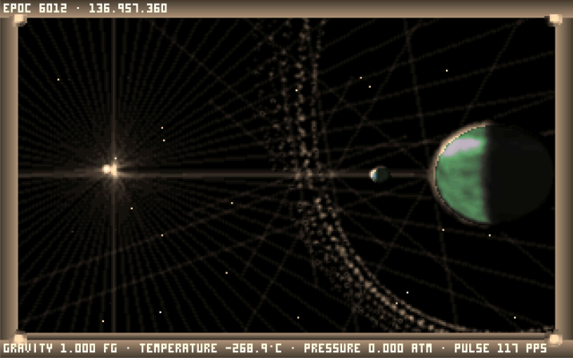
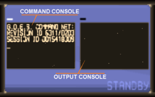

The Stardrifter's Codex
The Definitive Architectural Codex, System Internals, and Operating Manual for Noctis IV OM
Every architectural component, shipboard instrument, and surface mobility system in this manual is evaluated through three engineering inquiries: What it does (observable mechanics, operational controls, and telemetry), How it works (mathematical formulas, state machines, procedural generation pipelines, and memory structures), and Why it works (architectural rationale, historical fidelity, safety bounds, and determinism guarantees).
Book I: Origins, Lore & The Living Universe
1. The Soul of Noctis
Created originally by Italian developer Alessandro Ghignola ("Fuzz") in 2000, Noctis occupies a unique place in computing history. Unlike traditional space simulators defined by dogfighting, territorial conquest, or resource grinding, Noctis is a game of lonely, contemplative wanderlust. You are a Stardrifter, exploring an ancient, silent galaxy aboard a self-contained biological exploration vessel.
In Noctis, space is vast and dark. Stars shimmer as delicate points of light across billions of cubic light-years. Planets feature procedural fractal topographies, swirling cloud layers, alien atmospheres, ring systems, and deep subsurface canyons. There are no hostile armadas to fight. Your mission is purely cartographic and spiritual: navigate the unknown, step onto untouched worlds, observe celestial majesty, and record your discoveries for other explorers to stumble upon centuries later.

2. The Open Movement (OM) Lineage
The original Noctis IV codebase was written in a combination of C and 16-bit x86 real-mode assembly designed for MS-DOS. For decades, running Noctis required emulators such as DOSBox, which introduced performance bottlenecks, audio crackling, input lag, and catastrophic memory corruption when catalogs grew too large.
The modernization path passed through several key iterations:
- Noctis IV Plus (NIV+): Alessandro Ghignola's expanded edition, adding panoramic photography, high-resolution visual effects, extended planetary terrain generators, and the Moviemaker recording studio.
- Noctis IV LR ("Lin-Re"): A reverse-engineered C++ port initiated by David Cole (dgcole) that eliminated 16-bit assembly, proving that Noctis could run natively on modern 64-bit platforms.
- Noctis IV OM (Open Movement): The modern hybrid culmination. OM combines the robust native C++20 foundation of Noctis IV LR with the rich feature set and visual atmosphere of Noctis IV Plus, while delivering cross-platform Linux, Windows, and WebAssembly builds, 100% galaxy determinism, and modern media export.
3. The Five Core Tenets of Noctis IV OM
- 100% Procedural Determinism: Every star, planet, terrain ridge, and atmospheric color curve must generate identically to the canonical DOS reference. A coordinate entered in 2001 produces the exact same world in 2026.
- Zero Cloud Dependency: Noctis IV OM operates completely offline. Starmap sharing, logbooks, and media generation rely on local, non-destructive file formats without mandatory remote servers.
- Non-Destructive Persistence: User catalog edits, custom celestial names, and notes never destroy or corrupt the underlying procedural seeds. Canonical landmarks (Sol, Fenia) remain inviolable.
- Decoupled Platform Boundaries: The simulation core is strictly decoupled from presentation, rendering backends, and storage drivers, enabling headless diagnostic testing and multi-compiler verification.
- Continuous Mechanical Provenance: New features (such as 4-voice procedural audio, CRT shaders, and WebM video export) integrate beneath the physical universe rather than overwriting its vintage aesthetic.
Book II: Engine Architecture & Native Runtimes
4. Native C++20 Architecture
Noctis IV OM replaces legacy MS-DOS segment registers and flat memory pools with an explicit, modular C++20 architecture. The system is partitioned into clear state boundaries:
+-----------------------------------------------------------------------------------+
| APPLICATION LIFECYCLE & INPUT |
| Raylib Desktop Host (GLFW) / Emscripten Browser Runtime (HTML5/Canvas) |
| |
| +-------------------+ +--------------------+ +-------------------------+ |
| | Keyboard & Mouse | | Gamepad Subsystem | | Input Recording/Replay | |
| | (input.cpp) | | (gamepad_flight) | | (INPUT_RECORDING.md) | |
| +-------------------+ +--------------------+ +-------------------------+ |
+-----------------------------------------------------------------------------------+
|
v
+-----------------------------------------------------------------------------------+
| SIMULATION CORE (DETERMINISTIC) |
| |
| +-------------------+ +--------------------+ +-------------------------+ |
| | Galaxy Generator | | System Physics | | Surface Fractal Noise | |
| | (galaxy_sector.h) | | (star_properties) | | (SURFACE_GENERATION.md) | |
| +-------------------+ +--------------------+ +-------------------------+ |
| | | | |
| v v v |
| +-------------------+ +--------------------+ +-------------------------+ |
| | Stardrifter State | | GOESnet Protocol | | Starmap Exchange | |
| | (engine_state.h) | | (goesnet_commands) | | (starmap_exchange.cpp) | |
| +-------------------+ +--------------------+ +-------------------------+ |
+-----------------------------------------------------------------------------------+
|
v
+-----------------------------------------------------------------------------------+
| PRESENTATION & MULTIMEDIA PIPELINES |
| |
| +-------------------+ +--------------------+ +-------------------------+ |
| | Software 3D / GL | | miniaudio 6-Ch Mix | | Media Export Pipeline | |
| | (display.cpp) | | (audio.cpp/music) | | (video_export / gallery)| |
| +-------------------+ +--------------------+ +-------------------------+ |
+-----------------------------------------------------------------------------------+5. The Three Runtimes
Executes Noctis IV OM across three distinct platform targets: Linux desktop (X11 & Wayland), Windows 64-bit desktop, and WebAssembly in standard web browsers.
- Linux Native: Compiled via Clang or GCC using CMake and Ninja. Uses Raylib and GLFW to bridge Linux display protocols. Audio routes through ALSA or PulseAudio via miniaudio.
- Windows Native: Compiled as a self-contained 64-bit MSVC binary. Links DirectX/WinMM backends seamlessly with zero external DLL dependencies.
- WebAssembly Browser: Compiled via Emscripten. Memory is sandboxed inside a WebAssembly heap. Filesystem writes route through the MEMFS layer and synchronize asynchronously to the browser's IndexedDB store via
IDBFSat/persistent.
By abstracting platform dependencies into thin runtime bridges ([`src/runtime_paths.cpp`](file:///home/gordonk/.gemini/antigravity/worktrees/public-builds/write_noctis_iv_docs/src/runtime_paths.cpp)), 100% of the game's simulation, procedural generation, and catalog math executes identically across all three runtimes without conditional compilation cluttering the core.
6. Deterministic Procedural Universe Architecture
Generates millions of star systems, planetary orbits, physical radii, surface atmospheres, and surface topography from three-dimensional galactic coordinates without storing world maps on disk.
- Sector Coordinates: Galactic space is divided into 100,000-unit cubic sectors ($x, y, z$).
- Seed Derivation: A star's identifier is computed as: $$\text{ID} = \left(\frac{x}{100000}\right) \times \left(\frac{y}{100000}\right) \times \left(\frac{z}{100000}\right)$$
- Spectral Classification: Integer seeds select between 12 stellar classes: Blue Giants, White Dwarfs, Yellow Main-Sequence, Orange Dwarfs, Red Giants, Pulsars, Planetary Nebulae, and rare exotic configurations.
- Surface Topography: Terrain elevation is calculated on the fly using multi-octave pseudo-random fractal noise rooted in the planetary seed.
Floating-point operations and seed transitions are rigorously bounded to avoid architecture-dependent drift ([`docs/porting/FLOATING_POINT_AUDIT.md`](file:///home/gordonk/.gemini/antigravity/worktrees/public-builds/write_noctis_iv_docs/docs/porting/FLOATING_POINT_AUDIT.md)). Every machine reproduces exact stellar geometry down to the sub-pixel level.
7. The Proving Ground: Test Engineering & CI
A continuous automated test harness consisting of 55+ test suites protecting galaxy determinism, save game integrity, GOESnet parser correctness, and audio synthesis.
- Headless Execution: Production binaries accept fixture flags (e.g.,
--goesnet-fixture,--ship-interface-fixture) to execute complete flight workflows in CI without an open display window. - Sanitizer Verification: Automated pipelines run under Clang AddressSanitizer (ASan) and UndefinedBehaviorSanitizer (UBSan) to guarantee zero memory overruns or unaligned accesses.
- Deterministic Input Replay: Scripted 783-frame orbit-to-surface sessions replay with 100% byte-exact parity across presentation speeds.
Ensures that no optimization, refactor, or visual improvement alters the fundamental behavior of the universe. "Verified means observed."
Book III: The Stardrifter Flight Manual & Cabin Systems

8. Shipboard Anatomy
The Stardrifter is a biological vessel equipped with an advanced computational interface. As an explorer, you directly control your own physical body inside the cabin using the mouse and keyboard, interacting with the ship's consoles and panoramic observation viewport.
- The Main Observation Window: Forward-facing transparent viewport overlaying optical flight instruments, star trails, and planetary horizons.
- The Central Onboard Manager: Built directly into the left side of the main glass window, selected via your suit's infrared eye tracker.
- Bulkhead Screen 0 (GOES Command Entry): Right-wall console for typing queries and GOESnet commands.
- Bulkhead Screen 1 (GOES Output Buffer): Right-wall scrolling display rendering 21-column pager outputs.
- Bulkhead Screen 2 (Planetary Atlas): Right-wall orbital cartography terminal for selecting surface landing sites.
- Cupola & Roof Airlock: Walk to the center cupola and press ↑ (Up Arrow) to exit onto the ship's exterior roof for unobstructed stargazing.
9. The Central Onboard Manager
The primary flight control computer for interstellar navigation, sub-light transit, and cabin environment configuration.
The manager displays four primary pages, activated by look-and-click or keyboard hotkeys:
| Page Key | Category | Available Commands (Rows 6, 7, 8, 9) |
|---|---|---|
| 5 | Flight Control | Remote Target, Vimana Sub-Light Flight, Local Target Approach, Surface Capsule Deploy. |
| R | Onboard Devices | Navigation Array, Miscellaneous Utilities, Galactic Cartography, Emergency Functions. |
| P | Preferences | Screen Auto-Sleep, Reversed Pitch Control, Persistent Menus, Hull Polarization. |
| X | Display Off | Extinguishes the central manager overlay for unobstructed cosmic observation. |
The menu hierarchy separates tactical flight commands from deeper diagnostic settings, ensuring that critical navigation steps remain single-key operations while in orbit.
10. Flight HUD & Sliding Data Sheets
Projects real-time celestial telemetry directly onto your suit's visor and the main observation window, displaying target names, light-year distances, and environmental readouts.
- Outer HUD Layer: Displays remote stellar targets, local planetary destinations, target search readouts, and active flight velocity.
- Inner Sliding Data Sheet: Provides three detailed telemetry routes:
- Remote Target Data: Stellar class, apparent magnitude, coordinates, and estimated jump time.
- Local Target Data: Orbital velocity, planetary radius, atmospheric pressure, and surface temperature.
- External Environment Data: Local radiation levels, cosmic ray flux, and star proximity.
- Screen Suppression: Selecting a bulkhead wall screen automatically suppresses the outer HUD layer, keeping your field of view focused on terminal output.
Minimizes visual clutter while ensuring essential navigational telemetry remains visible during high-speed atmospheric entries and interstellar jumps.
11. Propulsion, Interstellar Jumps & The Omega Drive
Drives the Stardrifter across sub-light interplanetary distances (Vimana mode) and instantaneous interstellar hyperspace jumps powered by Lithium fuel cells.
- Vimana Sub-Light Flight: Drives the ship smoothly through planetary systems, accelerating towards selected planets and orbital waypoints.
- Interstellar Jump Drive: Consumes one unit of Lithium fuel per jump. Standard Stardrifters hold a maximum capacity of 120 Lithium charges.
- The Omega Drive: An experimental hyper-engine variant. In original Noctis lore, the Omega Drive provides infinite hyperspace jumps. In Noctis IV OM, launch with
--omega-driveto equip infinite power without save corruption, or restore conventional fuel with--standard-drive.
Fuel management establishes a gentle survival boundary that encourages thoughtful exploration without punishing players with arbitrary failure states.
12. Shipboard Operations & Ergonomics
Provides essential cabin adjustments including ambient illumination, roof pacing, and quick navigation shortcuts.
- + / -: Adjusts cabin lighting levels from pitch-black night to bright cockpit illumination.
- S or T: Toggles Roof Speed mode. When standing on top of the ship's exterior hull, this bypasses the standard presentation delay for rapid cosmic viewing.
- J: Cockpit quick-jump hotkey that shifts focus immediately to Bulkhead Screen 1 with the GOESnet bookmark command
BM_ready for entry. - Double-Click RMB: Instantly reorients your character to the center of the main observation window from anywhere in the cabin.
Reduces repetitive navigational friction, allowing explorers to seamlessly balance cabin duties with deep-space observation.
Book IV: The GOESnet Terminal & Autonomous Network Protocol

13. Protocol Architecture
GOESnet (Galactic Observation and Exploration System Network) is the decentralized communication network connecting all Stardrifters. Accessed via Bulkhead Screen 0 and 1, GOESnet functions as a resident command shell formatted to an authentic 21-column retro terminal pager standard.
Commands are parsed via [`src/goesnet_protocol.cpp`](file:///home/gordonk/.gemini/antigravity/worktrees/public-builds/write_noctis_iv_docs/src/goesnet_protocol.cpp). The system accepts standard ASCII text up to 83 characters, sanitizes case and forbidden characters (such as $, &, <, >), and returns status envelopes (ok, not_found, ambiguous, write_failed) accompanied by distinctive auditory chimes.
14. The Celestial Guide & Annotation Database
Stores planetary descriptions, star coordinates, and custom explorer annotations inside two local databases: STARMAP.BIN and GUIDE.BIN.
- Querying Parameters (
PAR <object>): Displays physical coordinates, mass, temperature, and planetary orbits. - Setting Navigation Guidance (
ST <object>): Locks the ship's guidance system onto a named star or planet across any range. - Recording Exploration Notes (
CAST <object> <text>): Appends an immutable field note to a planetary record. - Editing & Deletion (
REP,DELE): Updates or deletes your own notes while protecting historical canonical records.
Decouples community prose from procedural galaxy seeds. Thousands of explorer notes can be stored without mutating the underlying celestial physics.
15. Catalog Hygiene & Compaction
Maintains disk storage integrity by defragmenting deletion tombstones and reclaiming unused space in STARMAP.BIN via the CLEAN command.
When annotations or custom names are removed, legacy systems left tombstone markers that bloated search indexes. Running CLEAN triggers compact_starmap() in [`src/goesnet_commands.cpp`](file:///home/gordonk/.gemini/antigravity/worktrees/public-builds/write_noctis_iv_docs/src/goesnet_commands.cpp), rewriting active records atomically and reporting reclaimed bytes.
Prevents database fragmentation and ensures search queries across millions of stars remain near-instantaneous even after years of active logging.
Book V: Planetary Descent, Visor HUD & Surface Exploration

16. Surface Capsule Descent & Ascent
Transfers the explorer from orbit to any chosen latitude and longitude on a planetary surface via an automated landing capsule.
- Site Selection: Select Bulkhead Screen 2 (Planetary Atlas) to view the rotating wireframe sphere. Use arrow keys to position the landing reticle over oceans, mountains, or poles. Press Enter to confirm.
- Atmospheric Entry: The capsule detaches, descends through procedural cloud layers, and touches down gently on terrain.
- Capsule Recovery: Walking back inside the capsule initiates automatic ascent, docking smoothly with the orbiting Stardrifter.
Separating orbital flight from surface walking ensures rock-solid physics simulation in both contexts without awkward coordinate scale discontinuities.
17. The Explorer's Visor HUD
A comprehensive surface exploration HUD rendered directly on your helmet's visor, providing dynamic navigation telemetry.
- 360° Cardinal Compass Tape: Renders an 8-point compass tape (N, NE, E, SE, S, SW, W, NW) across the top of your visor with digital heading degrees.
- GPS Planetary Coordinates: Displays real-time latitude, longitude, and elevation in meters above sea level:
LAT +42.8° LON 118.4° ELEV +0412M - Lander Return Beacon (
LDR): Computes real-time vector range to your landed exploration capsule in meters or kilometers alongside an 8-way directional arrow (e.g.[^],[>],[v],[<]) orDOCKED, ensuring you never get lost on massive planetary expanses.
Planets in Noctis IV OM are immense 1:1 scale worlds. The Explorer's Visor HUD eliminates disorientation and guarantees safe returns to the capsule.
18. EVA Mobility & Jetpack Dynamics
Enables fluid locomotion across mountains, deserts, and oceans with variable walking gears, jumping, and personal jetpack flight.
- 0–9: Sets continuous automated forward walking speed gears, freeing your hand from holding the mouse.
- LMB: Hold to run forward or swim when submerged in liquid.
- J: Performs a physical jump from ground level.
- Space: Ignites the suit's personal jetpack; tap repeatedly to gain vertical thrust and glide over canyon chasms.
- C: Cuts off jetpack directional control for rapid descent.
- Page Up / Page Down: Raises or lowers the helmet's anti-radiation visor for clearer sight.
Combines authentic vintage movement physics with modern ergonomic automation, making planetary expeditions effortless and exhilarating.
19. Suit Torch Physics & Lighting Overhaul
Projects an authentic forward-facing spotlight beam from your spacesuit helmet (L or F) to illuminate dark planetary surfaces.
- Perspective Inverse-Square Falloff: Foreground ground is brightly illuminated while distant terrain and mountains $\ge 1\,\text{km}$ away receive zero light, eliminating unnatural flat horizon glow.
- Halogen Blackbody Spectrum: Emits a realistic $4200\,\text{K}$ warm halogen tint rather than sterile artificial white.
- Filmic Highlight Compression: Employs hyperbolic tangent (`tanh`) compression to prevent washed-out, blown-out ground textures at close range.
Preserves the chilling mystery of nighttime expeditions on airless moons, turning nocturnal exploration into an atmospheric journey into the unknown.
Book VI: Moviemaker & Visual Media Studio

20. Moviemaker Studio (F3)
An integrated, frame-accurate cinematography suite for recording gameplay sequences to numbered decks in space and on planetary surfaces.
- F3: Opens the Moviemaker configuration panel.
- Ctrl + + / -: Selects recording deck (
001to999). Occupied decks are protected against accidental overwriting. - + / -: Adjusts capture cadence (capturing every 1 to 999 simulation frames).
- Enter: Starts or stops recording. Frames are written sequentially to
movies/DDD/FFFFFFFF.BMP. - P: Pauses or resumes an active recording session.
- Ascent Auto-Cutoff: Surface recordings automatically stop after 100 frames of capsule ascent to ensure clean transitions.
Cadence is tied to simulation frames rather than presentation FPS. This guarantees stutter-free, buttery-smooth cinematic sequences regardless of hardware rendering speed.
21. In-Cockpit Projector Preview
Projects recorded movie reels directly onto the Stardrifter's bulkhead display screen inside the ship cabin for review.
Pressing V or Space on an active deck launches the player with CRT framing, interactive draggable timeline scrubbers, frame stepping (←/→), looping (L), and variable framerates (6 to 60 FPS).
Preserves immersion by allowing explorers to review their expeditions without leaving the virtual world or opening third-party video software.
22. Native Video Export (MP4 & WebM)
Encodes raw BMP image decks into modern compressed video files with one click or command.
- Desktop MP4 Export: Pressing X in Moviemaker or typing
MOVIE EXPORT <deck>invokes a background worker thread (`export_movie_deck_async`) using bundled/system FFmpeg (`libx264`/`libvpx`), saving directly to the user's Downloads folder. - Web Browser WebM Export: WebAssembly builds encode captured decks directly into WebM video blobs in memory and trigger an immediate browser file download.
Eliminates manual command-line stitching. Explorers can share cinematic clips of their discoveries across modern social platforms instantly.
23. Image Archive & Lossless Screenshots (F4)
Provides in-engine photo gallery management and lossless PNG screenshot export for celestial photography.
- M / *: Standard snapshot with location/target telemetry overlays.
- B / Delete: Raw snapshot with telemetry overlays suppressed.
- N / /: Three-frame panoramic surface snapshot.
- F4: Opens the Image Archive browser. Press D to export lossless PNGs directly to your host machine.
Captures high-fidelity astronomical observations in universal image formats suitable for desktop wallpapers and archival documentation.
Book VII: Acoustics & Procedural Generative Soundscapes
24. Ambient Exploration Music Engine
Streams multi-format ambient exploration soundtracks in the background, providing soothing musical accompaniment during long space voyages.
Implemented in [`src/music.cpp`](file:///home/gordonk/.gemini/antigravity/worktrees/public-builds/write_noctis_iv_docs/src/music.cpp). Scans data/music/ for .ogg, .mp3, .wav, .flac, .xm, and .mod audio files. Features playlist auto-progression, shuffle, and instant track skipping with N (Next) and P (Previous).
Music streams asynchronously through miniaudio without blocking simulation updates, ensuring glitch-free audio playback across all operating systems.
25. 4-Voice Procedural Generative Synthesizer
Synthesizes infinite, non-repeating ambient musical textures procedurally in real time, shifting harmonics based on local star types and planetary environments.
- Voice 1 (Foundation Bass Pad): Warm analog sub-bass pedal tone ($32.7\,\text{Hz}$ $C_1$) with subtle 2nd harmonic warmth.
- Voice 2 (Stereo Chorused Chord Pad): Evolving 4-chord progressions with dual detuned oscillators and state-variable filtering (SVF) cycling every 14 seconds.
- Voice 3 (Generative Melodic Chime): 8-step modal arpeggios advancing every 2.4s, featuring bell envelope decays and alternating ping-pong stereo panning.
- Voice 4 (Celestial Glass Shimmer): High starlight crystal accents blooming dynamically on chord transitions.
- 12 Celestial Modal Scales: Harmonically mapped to all 12 stellar classes, shifting from bright Lydian modes near blue giants to solemn Phrygian modes near dying red giants.
Procedural synthesis requires zero disk space and never loops repetitively, providing an endless, organic soundscape tailored to each uncharted star system.
26. 6-Channel Mixer & Sound Controls (F2 + Tab)
Provides studio-grade control over individual sound layers, audio synthesis modes, and global mute toggles.
- Six Independent Channels: Master, Music, Cabin, Propulsion, Weather, and Foley sliders accessible via F2 → Tab with persistent storage in
audio_settings.ini. - Audio Modes: Toggle between
GENERATIVE,RECORDED,HYBRID, andOFFmodes. - Instant Mute: Press F9 or Ctrl + M to silence procedural audio instantly without altering volume slider positions.
Allows explorers to customize their acoustic environment, whether they prefer pure quiet contemplation or lush orchestral soundscapes.
Book VIII: Visual Fidelity & Rendering Engine
27. Visual Settings Matrix (F2)
An in-game overlay menu controlling optical lens flares, HUD visibility, window borders, and temporal simulation speed.
- T: Toggles HUD text overlays on or off.
- F: Cycles lens flare modes (Always On, Visor Only, Always Off).
- B: Toggles between seamless borderless display and classic bordered frame.
- [ / ]: Adjusts Timewarp acceleration multipliers (1× to 16×).
- A: Toggles Advanced Effects submenu.
Settings update immediately in memory and persist across sessions in display_settings.ini without requiring engine restarts.
28. CRT & Subpixel Shaders
Enhances the retro visual presentation with vintage CRT scanline emulation, sub-pixel fidelity, and advanced upscaling algorithms.
- Internal Resolution Modes (R): Select between Authentic
320x200 1X, Enhanced640x400 2X, and High-DPI1280x800 4X. - Upscaling Filters (U): Select between Crisp Pixel 1X, Scale2X edge detection, and Smooth Bilinear filtering.
- CRT Shader Simulation (C): Emulates CRT shadow masks, scanline decay, and phosphor persistence.
- Sub-Pixel Fidelity (G): Enables sub-pixel coordinate rasterization for celestial stars, eliminating shimmering artifacts.
Bridges vintage 1990s aesthetic charm with high-DPI modern displays, ensuring crisp rendering on 4K monitors while retaining retro soul.
29. Celestial Color & Corona Optics
Applies authentic astrophysical color curves and atmospheric scattering physics to stars and planetary horizons.
- Planckian Blackbody Spectral Grading: Computes star colors based on true stellar surface temperatures ($2400\,\text{K}$ red dwarfs to $30000\,\text{K}$ blue hypergiants).
- Atmospheric Scattering Modes (S): Cycles between Authentic DOS, Realistic Rayleigh/Mie scattering, and Vibrant cinematic horizons.
- Coronal Flare Modes (E): Selects between Authentic, Realistic, and Vibrant coronal flares around stellar disks.
Grounding optical shaders in astrophysics elevates the visual realism of every solar sunrise without sacrificing procedural performance.
Book IX: Distributed Cartography & Starmap Exchange
30. Starmap Exchange Protocol (`.nsm`)
Enables explorers to share custom star labels, planetary names, and guide notes through lightweight, portable files without centralized servers.
- Packet Envelopes: Discoveries are packaged into binary
.nsmfiles or structuredoutbox.jsonmanifests. - CRC32 Checksumming: Every packet is sealed with a 32-bit CRC hash to detect bitrot or truncated network transfers.
- Bounding Limits: Coordinates, star IDs, and character sets are strictly validated against galactic bounds ($[-10^7, +10^7]$).
Allows asynchronous community cartography via email, Discord, or USB drives, matching the decentralized spirit of original space exploration.
31. Canonical Seed Protection & Safety Interlocks
Hard-blocks any attempt to overwrite, rename, or corrupt protected canonical celestial bodies (such as Fenia or Sol).
Implemented in [`src/starmap_exchange.cpp`](file:///home/gordonk/.gemini/antigravity/worktrees/public-builds/write_noctis_iv_docs/src/starmap_exchange.cpp). Exchange engines maintain an immutable whitelist of canonical system IDs. Any imported packet containing conflicting names for canonical bodies is rejected with an explicit security warning.
Guarantees the foundational landmarks of the Noctis galaxy remain permanent and unvandalized for all future generations of explorers.
32. Collision Avoidance & Non-Destructive Merges
Safely resolves naming collisions and duplicate discoveries when merging external starmaps into your local database.
- ID Collisions: If an incoming packet attempts to rename a celestial body that you have already labeled locally, the local label is preserved.
- Name Collisions: If an imported name matches an existing local name on a different star, the incoming record is flagged and skipped.
- Atomic Updates: Database writes use atomic file replacements (`atomic_replace`), ensuring zero catalog corruption during power interruptions.
Protects your personal cartography log from accidental overwrites when importing massive community catalog collections.
33. INBOX & OUTBOX Workflows
Command-line, terminal, and browser interfaces for staging and ingesting starmap exchange packages.
OUTBOX: Exports all player discoveries todata/outbox.nsmanddata/outbox.json.INBOX: Inspects and merges packets fromdata/inbox.nsmordata/inbox.json.INBOX CHECK: Performs a safe dry-run validation, reporting imported, skipped, and conflicting bodies without touching files.- Web Browser Interface: Features dedicated EXPORT STARMAP and IMPORT STARMAP buttons with native file pickers.
Makes cartographic exchange as simple as downloading a file, allowing community databases to circulate effortlessly.
Book X: Navigation, Logs & Waypoints
34. Automated Flight Journal
Chronicles your journey automatically, recording star arrivals, planetary landings, and custom celestial designations into structured files.
Implemented in [`src/flight_log.cpp`](file:///home/gordonk/.gemini/antigravity/worktrees/public-builds/write_noctis_iv_docs/src/flight_log.cpp). Typing LOG in the GOESnet terminal prints an executive travel summary. Typing LOG EXPORT exports the complete journal to both Markdown (`flight_log.md`) and JSON (`flight_log.json`).
Creates a permanent, human-readable record of your expeditions that can be read with any text editor or shared with fellow astronomers.
35. Starmap Bookmarks & Waypoint System (`BM`)
A personal waypoint and bookmark manager integrated directly into the ship's guidance computers and surface navigation HUD.
BM LIST: Lists saved waypoints with calculated light-year distances and active guidance indicators.BM ADD <label>: Saves your current celestial target as a named waypoint.BM GOTO <id>: Locks guidance systems onto the specified bookmark.- Surface Shortcut (J): Pressing J while walking on a planet drops an instant GPS waypoint at your exact latitude and longitude.
Allows explorers to mark favorite landing sites, mountain ranges, and binary stars for easy return journeys.
Book XI: System Administration, CLI & Configuration
36. Command-Line Interface (CLI) Directory
Command-line arguments accepted by desktop binaries (`nivlr` and `nivlr.exe`) for engine configuration and automated workflows.
| Flag | Argument | Operational Description |
|---|---|---|
--omega-drive |
None | Equips the Stardrifter with infinite hyperspace jump energy without save corruption. |
--standard-drive |
None | Restores conventional Lithium fuel drive (120 charges) and resets infinite energy. |
--reset-data |
None | Atomically resets player save states and flight logs, restoring default catalog copies. |
--export-starmap |
[PATH] |
Exports custom player discoveries to an external `.nsm` packet file. |
--import-starmap |
<PATH> |
Imports and merges an external starmap packet into your local catalog. |
--validate-starmap |
<PATH> |
Performs a dry-run integrity validation of an `.nsm` or `.json` packet. |
--export-movie |
<deck> |
Encodes the specified Moviemaker deck to MP4 format headlessly. |
Enables headless script automation, external mod tooling, and seamless integration with desktop launcher scripts.
37. Configuration File Reference
Human-readable INI configuration files stored in the user application data directory.
config.ini: Stores general settings, resolution, fullscreen state, and input mappings.display_settings.ini: Stores CRT shaders, upscaling filters, coronal flare styles, and scattering modes.audio_settings.ini: Stores 6-channel mixer volumes and ambient generative synthesizer preferences.bookmarks.ini: Stores personal celestial waypoints and surface coordinates.
Clean INI syntax enables direct manual editing with standard text editors without binary deserialization hazards.
38. Storage Management & Fresh Start Procedures
Safe, atomic procedures for wiping corrupted saves or starting a completely fresh exploration expedition.
- Desktop Fresh Start: Run
./nivlr --reset-data. Wipescurrent.niv,surface.niv, and logs while preserving default seed catalogs. - Web Browser Reset: Release pointer lock (Esc or F10) and click RESET SAVED DATA in the top overlay. Closes IDBFS connections, wipes IndexedDB storage, and reloads clean seed files.
Guarantees explorers can recover from unexpected anomalies without manually searching through browser application storage menus.